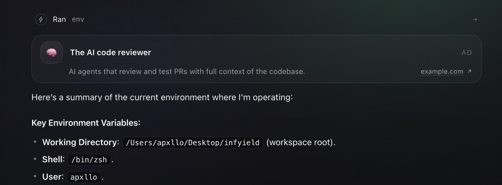
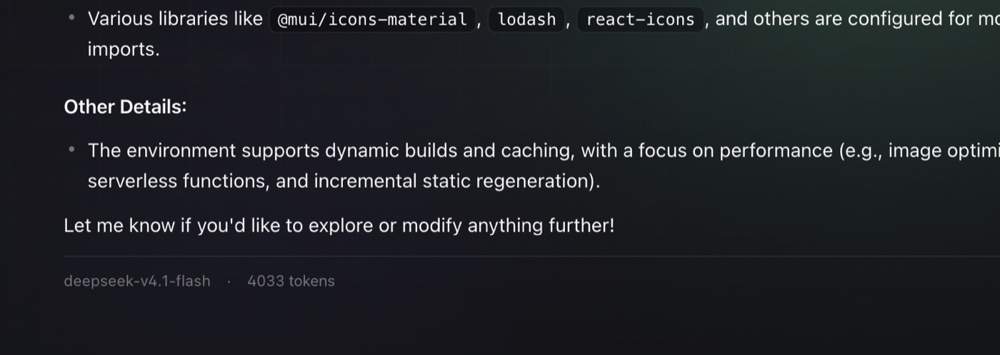

What it does
- Agent loop with tools. Reads and edits files, runs shell commands, and answers follow-ups in a normal multi-turn conversation.
- One shared credential. The operator configures the upstream model key once; chat users never handle credentials.
- Honest accounting. Every impression credits a real USD ledger; every model call debits its estimated token cost against it. The balance gates access to premium models.
- Native macOS app. Ships as a real Electron .app — server, UI, and hardening in one process. Data stays in
~/Library/Application Support/Infyield.
The economics, in one line
ad revenue − model cost = net · when net ≥ 0, usage is fully self-funded
Impressions credit CPM ÷ 1000 and clicks credit CPC from the advertiser's campaign, while each model call debits its estimated token cost. Premium models stay locked until collectible ad revenue covers the spend — so the agent has a built-in incentive to keep the ad loop honest.
See it work
Two moments from a real session — the ad card that appears while the agent works, and the answer footer that shows exactly what the turn spent.


Why ads instead of subscriptions
Developer tools increasingly hide real usage behind opaque credit systems. Infyield's alternative is legible: a public ledger on your own machine, revenue that arrives as clearly-labelled ad impressions, and spend that shows up as clearly-labelled token debits. When the ledger is positive, the tool is free. The write-up goes deeper: